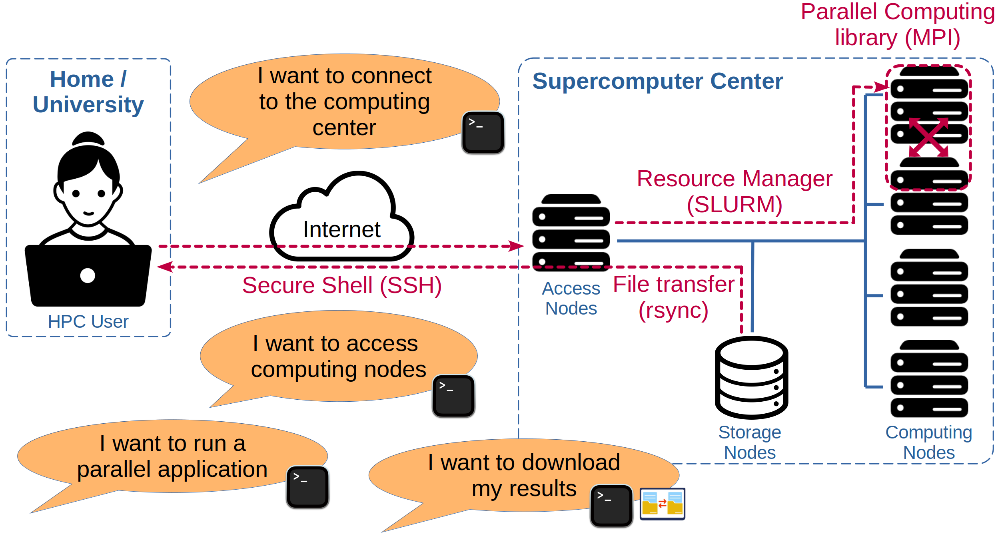
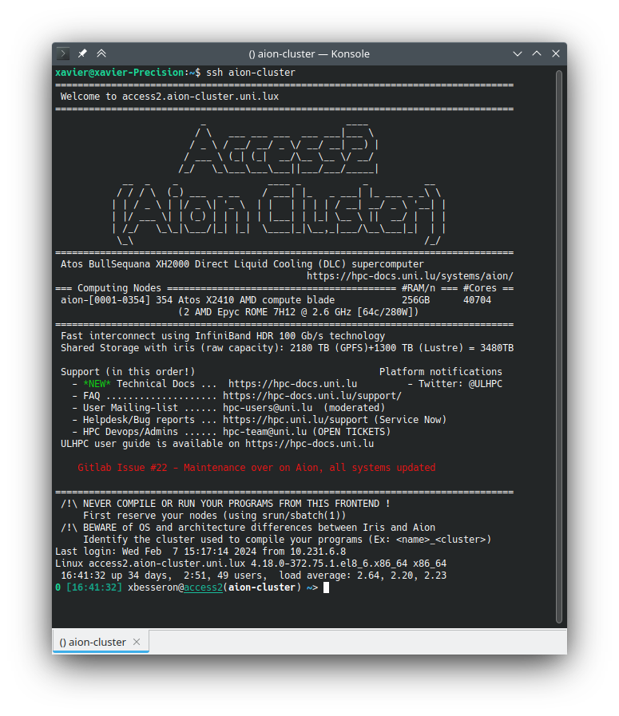
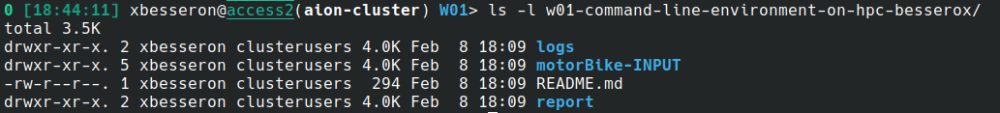
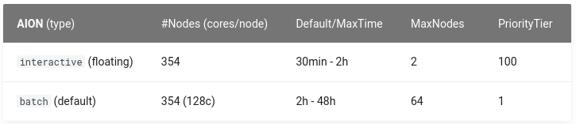
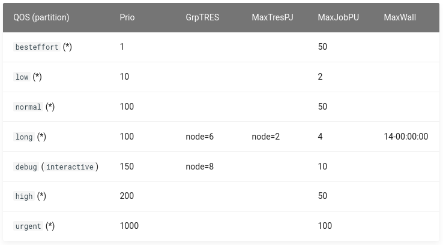
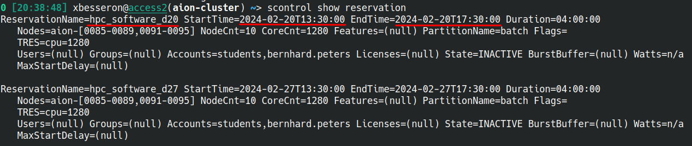
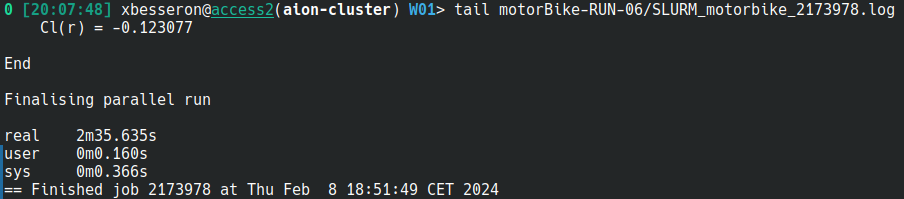

Command Line Environment on HPC
- Author: Xavier Besseron (University of Luxembourg)
- License: ©2024 CC BY-NC-SA 4.0
- Date of practical: Tuesday 20th of February 2024
🔵 Introduction
This course on HPC Software Environment aims to provide you with a comprehensive understanding of the software environment used in High-Performance Computing (HPC) from the perspective of application developers and users. It covers aspects related to application development, software deployment and execution of HPC workflows.
During the semester, you will have the opportunity the learn about and get familiar with numerous tools that will make you an HPC power user. The practicals proposed over the semester will be carried out on the Uni.lu HPC platform and make intensive use of the command line and Git.
Important
The content of this practical is considered a technical requirement for the rest of this course. If have difficulties carrying out the exercises, it is strongly advised that you check the "Additional Resources" and study them carefully.
Objectives
The objective of this practical is to ensure that you master the technical requirements in preparation for the rest of the semester:
- Connect to the Uni.lu HPC platform
- Use the command line interface
- Get compute nodes and submit jobs
- Work with Git
- Transfer files between your personal computer and the HPC
The exercises will also refer to external documentation and instructions that need to be consulted. The aim is for you to be independent and work in 'real conditions' by finding the information you need to complete the task.

Instructions
This practical is an individual work to be carried out on the Aion cluster of the HPC platform of the University of Luxembourg.
It is composed of different elements:
- this page that contains step-by-step instructions and questions;
- the GitHub Classroom repository that contains the materials for the exercises;
- the report that you have to submit via GitHub Classroom with the rest of the requested documents
Important: Uni.lu HPC Account
It is assumed that you have an account on the Uni.lu HPC and that you know already how to access the platform.
If needed, How to Get a New User account?
Important: GitHub Account
This practical and the following ones will rely on GitHub Classroom to download the materials and submit your results and thus it requires a GitHub account. If you don't have a GitHub account, you can sign up here.
Report
Together with this tutorial, you need to prepare a short report of your work:
- There is no template, you can start from a blank document. Keep it simple, clear and well-organized.
- Make sure you answer all the questions (cf below), with text, code or screenshots.
- Prepare your report at the same time you're doing the exercises.
- Submit your report as a PDF file to your GitHub Classroom repository and push it before the deadline.
Question 1
Indicate at the beginning of your report:
- the title of the practical
- your full name
- your Uni.lu HPC username
- your GitHub username
- the date
🔵 Part 1: Accessing the HPC platform
In this part, the goal is to connect to the HPC platform from your personal computer. This can be a bit complicated the first time but it should become pretty smooth once everything is properly configured.
It is assumed that you previously used the HPC of the University so this should be a problem.
Setup of SSH Access
Getting access to the Uni.lu HPC usually requires the following steps that have to be done once for all:
- Getting an account
- Installing an SSH client
- Creating an SSH key
- Uploading your public SSH key
- Setting up your SSH configuration
Tip
Working on Linux or MacOS is a great advantage for this as most of the tools are already available and follow the standard configuration.
If you work on Windows, it is recommended to install Windows Subsystem for Linux (WSL) and set up an Ubuntu subsystem from the Microsoft Store. Thus, you can directly work on Linux within Windows.
Warning
This configuration is important as you will make use of it throughout the semester. Without it, it will be impossible to carry out the work of this course.
Guidelines to Handle Your SSH Keys
Handling SSH Keys can be confusing and intimidating at first. It is about security and it should be taken seriously when all the devices are connected to the Internet. Here are a few guidelines:
- The term "pair of SSH keys" refers to the public and private keys associated together.
- The private key is meant to be private: Never share it with anyone! Don't send it by email! (not even to yourself) Don't put it on a Cloud drive (Dropbox, Google Drive, MS OneDrive, etc.).
- Generate one pair of keys for each of your account@machine. Don't try to copy your keys around. It makes it easier to block an access if it gets compromised.
- Protect your SSH key with a passphrase. Without that, if your laptop gets stolen, your accesses to remote machines get compromised too! Instead, learn to use SSH Agent so you need to type your passphrase only once after booting your laptop.
- You're not allowed to share your HPC access with another person. If you need to do it for some reason (e.g. debugging issues specific to your account), you should NOT share your private SSH key. Instead, you should authorize the SSH public of the other person to access your account (via IPA or
.ssh/authorized_keys)
Connection to HPC Access
When using a supercomputer, you will usually first connect to a front-end or access node. From this machine, you can check your files, disk quota and computing usage. It is intended to be used by the user to prepare his computing job and scripts and then submit them to the job scheduler.
Because the access node is shared by all the users of the platform, it should not be used to compile and install your software and it should definitely not be used to run any memory or computing-intensive task.
This is an excerpt of the Acceptable Use Policy of Uni.lu HPC that you accepted to get an account on the platform:
The frontend (access) nodes of the UL HPC clusters are reserved for data transfer to/from the clusters, preparation of job submissions to the queueing system and checking the status of computational jobs. The frontend nodes must not be used for compute or I/O bound processes. Processes inappropriate to execute on the access nodes may be killed and the user notified.
Usually, there are some guardrails implemented on the access mode to prevent unwanted usage. For example, there is no compiler installed or the module command is not available.
If you configure your access correctly, connecting to the access node of the Aion cluster should be straightforward.
ssh aion-cluster
Alternatively, you can connect to the Iris cluster with this command:
ssh iris-cluster
Info
In the example above, aion-cluster does not name a specific machine.
Instead, it refers to an entry in the SSH config file that defines a set of configuration items, like the hostname (actual address on the internet),
the port of the SSH service and your username, so you don't need to remember them and enter them every time.
If the connection is successful, you should see something like this:

The shell prompt (last line on the terminal) should indicate that you're correctly connected to the Aion cluster.
Failing to connect?
If you fail to connect, don't panic! Instead look for clues that would indicate the reason of the failure:
- Any error message? Check carefully all the output lines on your terminal, and try to address the first one.
- Need more information from SSH? Add the
-voption (like verbose) after thesshcommand. That will give you more details about the connect process. You can add morevto get more detailed messages. - Call me ! 👨🏫 This time I will help you getting this right, next time you're on your own 🙂
You made it! You're connected to the HPC of the University of Luxembourg.
🔵 Part 2: Exploring the command line and the shell
It is time to explore your user account. Try these different commands:
- Who are you?
whoami,echo $USER,id - Who is connected?
who - What time is it?
date - On what computer are you?
hostname,uname -a,lsb_release -a - Where are you on the computer?
pwd
For the commands you don't know, take the time to check what they do. For example, whatis who, who --help or man who.
Question 2
Enter commands to show
- your username
- the machine on which you're connected
- the date
- the current working directory
Take a screenshot and add it to your report 📸
About files, directories and storage usage
A few more commands to try:
- List the files with
lsandls -l - Explore the directories with
cd - Do you know the command
tree -d? Check the man page to understand what it doesman tree. - To know your storage usage and quota:
df-ulhpc. It is an enhanced version of thedftool specific to the Uni.lu HPC. - To know more about the size of specific files and directories, you can use
duorncdu. For example, trydu -sh ~andncdu ~to know about your home directory.
Disk usage and number of files
In Linux, understanding disk usage and number of inodes is crucial for managing your filesystem effectively.
Disk Usage:
- Represents the actual physical space occupied by your files and folders.
- Measured in units like kilobytes (KB), megabytes (MB), gigabytes (GB), etc.
- You can check disk usage with commands like
df,duordf-ulhpc.
Number of Inodes:
- Represents the number of entries available to store information about files and directories, even if they're empty.
- Think of it like unique IDs for each file/folder, similar to house numbers.
- Fixed when the filesystem is created, cannot be changed dynamically.
- Check inode usage with
df -i,du --inodesordf-ulhpc -i.
Type of commands and files
The shell is the program that reads the command line typed by the user, executes it and displays the output. Bash commands fall into four main categories:
- Builtins: These are built-in functionalities of the Bash shell itself, like
cdorecho. They are fast and readily available without needing separate files or definitions. - Aliases: These are user-defined shortcuts for longer or more complex commands. For example, you could create an alias
llto runls -lfor a detailed directory listing. Aliases are simple and convenient but offer limited functionality. - Functions: These are more elaborate user-defined commands, similar to mini-programs within your shell. They can accept arguments, perform calculations, and even call other commands. Functions provide more control and reusability than aliases.
- Files: Any executable file can be executed as a command. This includes shell scripts, compiled programs, or even plain text files with appropriate permissions. Files offer maximum flexibility but require creation and proper setup.
To understand the type of a command, you can use
typeto determine the type of a commandfileto determine the type of a filewhichto see the full path of a command
Question 3
Find the type, and if applicable the file type, of the following commands: history, echo, cp, srun, si, python3, less, zless, and aionstat.
🔵 Part 3: Setting up Git and downloading the materials
This practical relies on Git Classroom to distribute the extra materials and for the submission of the report.
To create your copy of the repository, follow the invitation link and accept the assignment:
- Assignment link: https://classroom.github.com/a/i8EMSXuK
Accessing GitHub from the Uni.lu HPC
To be able to clone, pull and push your GitHub repository from the Uni.lu HPC, you need to configure your SSH keys.
- Generate a new SSH key on the HPC (if necessary). Normally, you already have one named
~/.ssh/id_ecdsa.pub - Add it to your GitHub account, in the Settings -> SSH and GPG Keys page
If needed, follow the instructions in the GitHub documentation Adding a new SSH key to your GitHub account
Organize your files: Create directories and subdirectories in your Home directory!
mkdir MHPC-HPC_Software_Environment
cd MHPC-HPC_Software_Environment
mkdir Practical_W01
cd Practical_W01
Once you have accepted the assignment and configured your GitHub account, you can clone your repository in the Home directory of the cluster.
# Don't forget to replace your GitHub username
git clone git@github.com:MHPC-HPCSoftwareEnvironment/w01-command-line-environment-on-hpc-GITHUBUSERNAME.git

Failing to clone?
If you fail to clone your GitHub repository, check carefully the error messages.
ERROR: Repository not found: Most likely you forgot to replaceGITHUBUSERNAMEin the command line above. Possibly, you do not accept the assignment after click the GitHub Classroom link.Permission Denied: You need to grant access to your GitHub repositories from your Uni.lu HPC account. Check the instruction above in "Accessing GitHub from the Uni.lu HPC".
First commit and push
Let's make sure that your configuration is working.
- Go to the directory of your GitHub Classroom;
- Edit the
README.mdfile, with your favorite text editor - Add your name at the top, for example,
Student: Firstname Lastname - Save and exit the text editor
- Add the modification to Git:
git add README.md - Commit the changes with
git commitand set a descriptive message - Push your changes to GitHub using
git push
Check your GitHub repository online to make sure this was successful: https://github.com/MHPC-HPCSoftwareEnvironment/w01-command-line-environment-on-hpc-XXX
Editing files on the HPC
In a terminal environment, editing a file can appear complicated. Rather than download-edit-upload (which is cumbersome) or using a graphical editor (which can be slow), we usually prefer to use a terminal-based text editor.
There are widely known and adopted text editors available on the HPC:
- Nano: A user-friendly editor designed for simplicity and ease of use, ideal for beginners or quick edits. To get started:
nano <filename>. - Vi/Vim: This powerful editor has a steep learning curve but offers immense customization and efficiency, making it a favorite among programmers and experienced users. To get started:
vim <filename>.
If you don't know what to pick, use Nano.
🔵 Part 4: Using a compute node interactively
Information about the computing platform
The documentation of Uni.lu HPC describes the available partitions and QoS defined on the cluster:


This information can be retrieved directly from the command line. In addition, it is also possible to get the status of the queue.
- Configuration of the partitions:
scontrol show partitions - Configuration of the QoS:
sacctmgr show qos - View the jobs in the queue:
squeue
The last command can be a bit verbose due to all the jobs running and pending on the cluster. It can be filtered using different command line options:
- Filter by users:
--useror-u - Filter by state:
--statesor-t - Filter by partitions:
--partitionor-p - Filter by QoS:
--qosor-q
For example, squeue -t RUNNING -p interactive will display only the jobs currently running on the interactive partition.
Question 4
What is the command to see your pending jobs?
Tip
The command sq command will only your jobs in the queue. This command is specific to the Uni.lu HPC platform.
Finding your reservation
The HPC platform is shared by all its users. All users can submit jobs at any time. There is no guarantee that a compute node will be available immediately for your job to be executed, and you might have to wait in the queue for minutes, hours or even days for larger jobs.
To avoid this issue, compute nodes have been reserved for you and are available during the practical sessions of this course.
Use the command scontrol show reservation to see the reservations. Find the name (starting with hpc_software_) of the one available today for your usage.

By adding the --reservation=hpc_software_XX option to your SLURM commands, you will have access to a compute node immediately.
Keep in mind
The reservations are only valid for a given time, usually the duration of the practical session.
- During the practicals, use the reservations as those nodes are dedicated to you.
- Outside the practical hours, you cannot use the reservations. Simply remove the
--reservationoption from thesalloc/sbatchcommand line to access the compute nodes like every other user.
Connection to a compute node
To use a compute node, we use the salloc command:
salloc -p interactive --qos debug --reservation=hpc_software_d20 --time=1:00:00
Once in the shell on the compute node, you can exit with the exit command or Ctrl+D.
Under the hood, salloc performs many operations:
- allocate CPUs on the available compute nodes
- connect to the first node of the allocation
- execute a shell by default
- release the allocation once the shell exits
It is a blocking process: the salloc finishes only once the shell running on the compute node is terminated. Furthermore, the partition interactive and the QoS debug request resources that are dedicated and adapted for interactive usage: a small number of resources for a short time but with a high priority.
Additional command line options can specified with salloc:
- Number of nodes:
-Nor--nodes - Number of tasks or processes:
-nor--ntasks - Number of cores per process:
-cor--cpus-per-task - Time limit:
-tor--time
Tip
The command si is a quick shortcut to get a compute interactively. This command is specific to the Uni.lu HPC platform.
More details are given in the documentation.
Question 5
Once connected to a compute node:
- How can you tell you're now connected to a compute node and not the access node?
- What is the name of the compute node you're connected to?
- Use the
sqto see your job in the queue - What is your JOBID?
- What is the total duration of your job?
Add a screenshot of the relevant part of your terminal 📸
Finding and using software
Once connected to a compute node, it is possible to look for the available software and use them with the module command. Try the following commands:
# Overview of the available software
module overview
# List and version of available software
module avail
Error when executing module?
The module command is not available on the access node to avoid running computing tasks on by mistake.
- Check that you are correctly connected to a compute node.
With module, we can find and use a more recent GCC compiler:
# Check the current GCC
which gcc
gcc --version
# Look for GCC compiler
module avail compiler/GCC
# Load the GCC module
module load compiler/GCC/10.2.0
# Check the loaded modules
module list
# Check the loaded GCC
which gcc
gcc --version
# Unload GCC
module unload compiler/GCC/10.2.0
module list
# Unload all modules
module purge
module list
Running a parallel application
With this exercise, we will run a small parallel simulation of Computational Fluid Dynamics (CFD) using the OpenFOAM software. This toy example calculates the airflow around a motorbike.

Let's make sure to allocate at least 6 CPU cores for this task.
salloc -p interactive --qos debug --reservation=hpc_software_d20 --time=1:00:00 -n 1 -c 6
Find and load the OpenFOAM application, and set up the environment:
module avail OpenFOAM
module load cae/OpenFOAM/8-foss-2020b
source $FOAM_BASH
Copy the simulation input files from the cloned Git repository. Make the copy outside the repository as it is not intended to be added to the repository
cp -r w01-command-line-environment-on-hpc-XXX/motorBike-INPUT/ ./motorBike-INTERACTIVE
cd ./motorBike-INTERACTIVE
Test the parallel execution of the simulation in an interactive mode:
# Decompose the problem for parallel execution (specific to OpenFOAM)
decomposePar
# Run the OpenFOAM solver in parallel: 6 processes with 1 core each
srun -n 6 -c 1 simpleFoam -parallel
The execution should last around 2 minutes. It will display a lot of output showing the progress of the simulation. If successful, it will end with the line Finalising parallel run.
Congratulation! You have executed a CFD parallel simulation on the HPC cluster of the University 🎉
You can now disconnect from the compute nodes using the exit command.
🔵 Part 5: Submitting an HPC job
In this part, you will learn how to submit a passive job (also called batch). These jobs are executed in the background when resources are available. There is no need to stay connected to the platform.
Specifying resources
One of the key aspects of SLURM is the specification of resources. Many options allow to you describe with precision and flexibility the requirements for your parallel application.
This table summarizes the main options for salloc, sbatch and srun:
| SLURM Option | SLURM Terminology | Usual Terminology |
|---|---|---|
--nodes / -N |
Number of nodes | Number of compute nodes |
--ntasks / -n |
Number of tasks | Number of processes |
--cpus-per-task / -c |
Number of CPUs per task | Number of cores/threads per process |
--ntasks-per-socket |
Number of tasks per socket | Number of processes per physical CPU |
--gpus / -G |
Number of GPUs | Number of GPUs |
There are many other options available to specify the resource constraints in SLURM. Check the SLURM documentation or man pages for more details.
Warning
SLURM uses sometimes a different terminology than the usual one. It is important to remember the main differences:
- A task in SLURM means a process.
- A CPU in SLURM means a physical CPU core.
- A socket in SLURM refers to a physical Socket, i.e., to the whole CPU or processor.
Writing a submission script for SLURM
A batch job is submitted using the sbatch command and a script. SLURM interpret the resource constraints to schedule the job and when the resources are available, the script is executed.
The resource constraint can be specified on the command line after the sbatch command (similarly to what we have done for salloc) or inside the script using the #SBATCH keyword at the top of the script. It is also possible to use a combination of both, in which case the command line options take priority.
Now, we will write a submission script for the motorbike simulation that we tested earlier. An example script is provided simulation input directory.
Let's first make a new copy of the input directory.
cp -r w01-command-line-environment-on-hpc-XXX/motorBike-INPUT/ ./motorBike-RUN-06
cd ./motorBike-RUN-06
Inside this directory, there is a script called run_OpenFOAM_parallel.sh. We will modify it and adapt it to our needs.
1 2 3 4 5 6 7 8 9 10 11 12 13 14 15 16 17 18 19 20 21 22 23 24 25 26 27 28 29 30 | |
Use your favorite text editor to edit the script:
- Change the working directory at line 19
Read the script line by line to understand what it does. It is very similar to what we have done manually to run the parallel simulation.
Job submission
The script submission is done using the simple sbatch command:
sbatch run_OpenFOAM_parallel.sh
However, to use the reserved nodes during the practical session, you should rather use:
sbatch --reservation=hpc_software_d20 run_OpenFOAM_parallel.sh
Job monitoring
It is possible to monitor the execution of your job.
Before the job starts:
- Using
sqwill show the status of your job. The column ST indicates the state:Pfor pending,Rfor running.
Once the job is running:
- The command
sqwill indicate on which compute node it is running. You can use SSH to connect directly to this node and monitor the processes. Trytoporhtopto monitor the CPU usage. - The terminal output of the execution is saved in the log file specified by the
--outputand--erroroptions. Open this file withlessortail -fto see the progress of the execution.
After the execution:
- The job will disappear from the
sqoutput, which means the execution is completed (with or without errors). Check the log file to find out if the execution was successful. - At the end of the log file, there will be time indicated. It is the time spent in executing the parallel simulation, measured and displayed using the
timecommand at line 28 of the script.

Using more computing resources
Now, we want to run the simulation with more computing cores:
- Create two new directories from the initial input:
motorBike-RUN-12for an execution with 12 coresmotorBike-RUN-24for an execution with 24 cores
- Modify the batch script in each directory:
- Don't forget to modify the number of processes and the working directory
- Submit the two jobs with
sbatch- Monitor the executions to ensure it is successful
Question 6
- Collect the execution time of the parallel simulations for 6, 12 and 24 cores.
- In your report, create a table with 3 columns: SLURM JOBID, Execution Time and Name of the file log.
- Copy the three log files in the Git Classroom repository you have cloned. Put them in the
logssub-directory. Don't forget to commit and push.
🔵 Part 6: Final questions and report submission
For the last question, I would like to know about your background.
Question 7
Please answer with one line/sentence to each question:
- What Operating System(s) do you use on your personal laptop and/or workstation?
- Are you familiar with Linux and the Command Line? For how long?
- What programming languages do you know? What level? (beginner, medium, expert)
-
Do you know MPI, OpenMP, CUDA? Or any other parallel programming model?
-
Why did you choose the Master in HPC?
Final submission ⚠️
Don't forget to add and push all the required files to your GitHub Classroom repository:
- the log files of question 6;
- the report, including the answers to all the questions and the screenshots.
Finalize your report and save it as a PDF (no other format allowed!) in the report sub-directory of your GitHub Classroom repository.
Uploading your report
You don't need to copy it to the HPC to upload your report. Instead, you can use the Add file button directly on the GitHub webpage.
Files Submission
Your files and report are considered submitted once they are pushed to your repository.
Check your GitHub repository online to make sure: https://github.com/MHPC-HPCSoftwareEnvironment/w01-command-line-environment-on-hpc-XXX
Passed the deadline at 25/02/2024 23h59 you won't be able to push anymore.
🔵 Additional Resources
Getting help
Uni.lu HPC Tutorials and Documentation:
Online Documentation:
- Bash Reference Manual
- Manpages
- Git Reference Manual
- SLURM Documentation
- User’s Tour of the Module Command
Books:
Don't Fall Behind: Self-learning Materials
Linux and Command Line:
- Introduction to Linux in HPC on HPC Wiki
- The Unix Shell on Software Carpentry
Terminal-based Text Editors:
Git and GitHub:
- Version Control with Git on Software Carpentry
- GitHub and Git Tutorial for Beginners on DataCamp
HPC Tools and Environment:
- Job scheduling with SLURM on Uni.lu HPC
- Using software modules on Uni.lu HPC